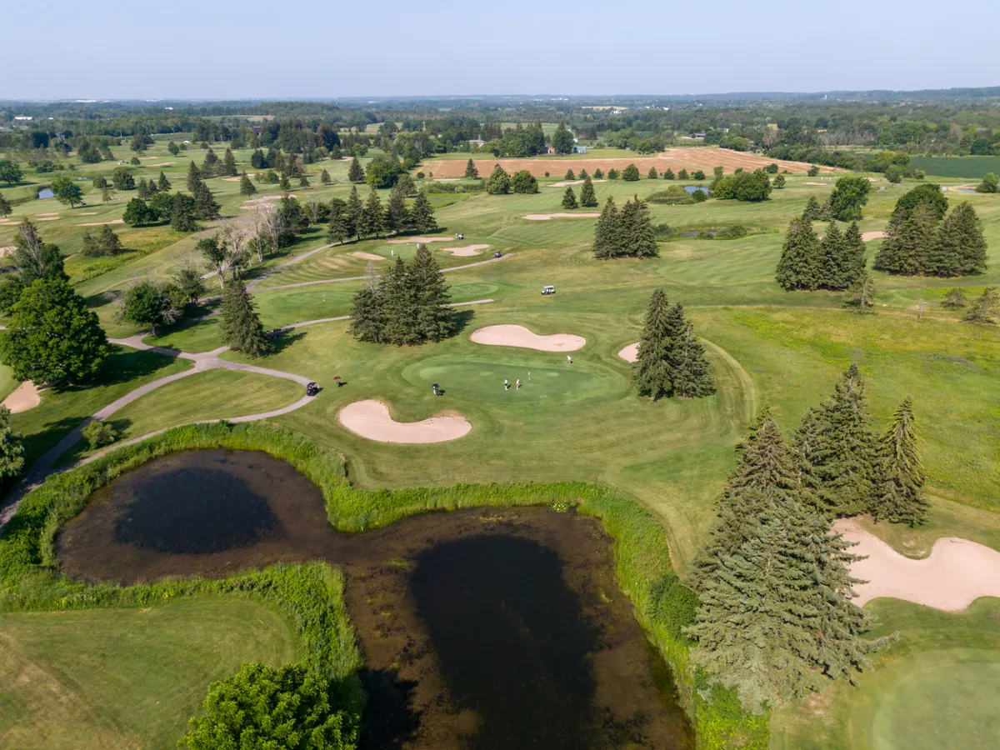
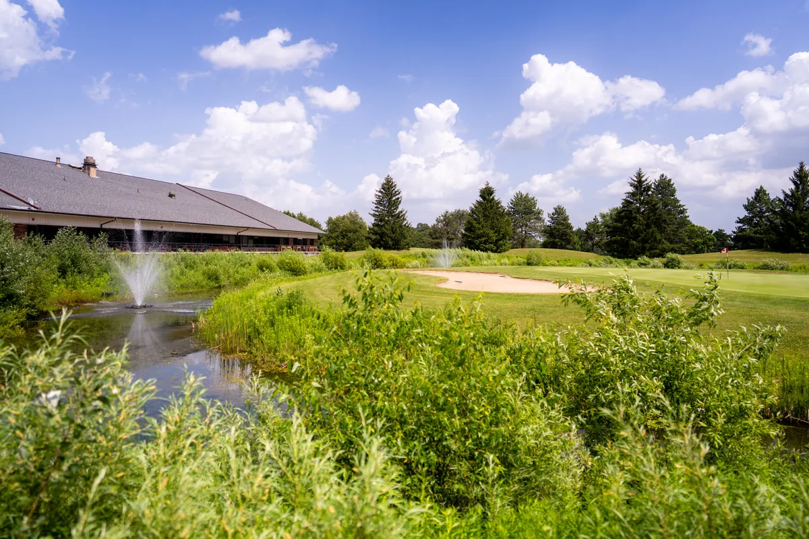
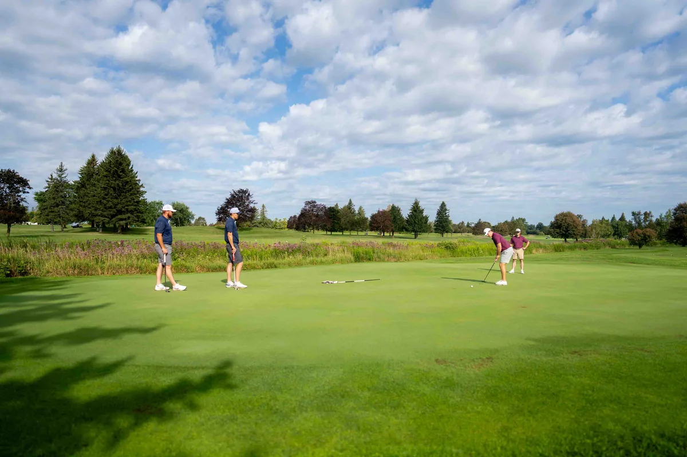

Course Gallery
A look around the property
Three championship courses across the Oak Ridges Moraine, photographed through the 2026 season. Tap any image to view it full size.
The Land
Ponds, pines and fescue across the Oak Ridges Moraine.

The Clubhouse
The veranda, the gardens and the fountain.

Members at Play
Club events through the summer of 2026.
